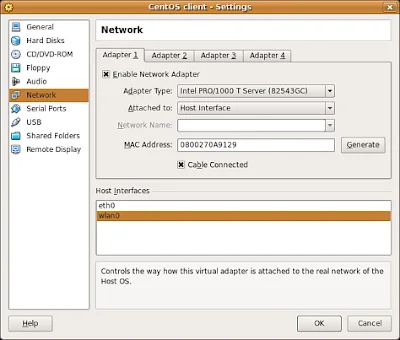

- Support for hardware virtualization (VT-x and AMD-V) on Mac OS X hosts
- Support for 64-bit guests on 32-bit host operating systems (experimental)
- Added support for Intel Nehalem virtualization enhancements
- 3D acceleration via OpenGL (experimental)
- LsiLogic and BusLogic SCSI controllers (experimental)
- Full support of VMDK (VMware images) and VHD (Microsoft images) including snapshots
- New NAT engine with significantly better performance, reliability and ICMP echo (ping) support
- New Host Interface Networking implementations for Windows and Linux hosts with easier setup (replaces TUN/TAP on Linux and manual bridging on Windows)
To run a guest as a server, you had to create a complex network configuration involving TUN/TAP devices, a bridge, etc. It kind of worked (not with wireless though) but who enjoys messing with their network setup? Not me.
Let's try it! Start VirtualBox, select your favorite guest and edit its network settings: that's Settings, then Network (duh). This brings you to the screen below.

{kind=link}
All you need to do is:
- Set Attached to to 'Host Interface'
- Select in Host Interfaces the physical interface you want the guest to access (wlan0 in my case)
- Click OK and start the guest
DEVICE=eth0
ONBOOT=yes
HWADDR=08:00:27:0A:91:29
A few seconds later: grrr, this is not working. Why?
A few minutes later: ah, silly me :) My wireless router is filtering MAC addresses (it's not because you're paranoid that they're not after you) and obviously it has never heard of the MAC address used by the guest. There are two options:
- Disable MAC address filtering (no way)
- Add the guest's MAC address to the list of authorized clients (you bet!)
Ha ha, it looks like DHCP worked: I've got an IP address (ifconfig eth0), a default route to the gateway (route -a) and up to date DNS information (/etc/resolv.conf).
Let's ping the host:
[julien@centos ~]$ ping -c 3 192.168.0.2
PING 192.168.0.2 (192.168.0.2) 56(84) bytes of data.
64 bytes from 192.168.0.2: icmp_seq=1 ttl=64 time=0.340 ms
64 bytes from 192.168.0.2: icmp_seq=2 ttl=64 time=0.220 ms
64 bytes from 192.168.0.2: icmp_seq=3 ttl=64 time=0.276 ms
--- 192.168.0.2 ping statistics ---
3 packets transmitted, 3 received, 0% packet loss, time 2006ms
rtt min/avg/max/mdev = 0.220/0.278/0.340/0.052 ms
Good, now let's ping the world :)
[julien@centos ~]$ ping -c 3 www.gnu.org
PING gnu.org (199.232.41.10) 56(84) bytes of data.
64 bytes from www.gnu.org (199.232.41.10): icmp_seq=1 ttl=48 time=141 ms
64 bytes from www.gnu.org (199.232.41.10): icmp_seq=2 ttl=48 time=141 ms
64 bytes from www.gnu.org (199.232.41.10): icmp_seq=3 ttl=48 time=139 ms
--- gnu.org ping statistics ---
3 packets transmitted, 3 received, 0% packet loss, time 2004ms
rtt min/avg/max/mdev = 139.440/140.698/141.344/0.941 ms
DNS and internet access are up as well. Now, let's try it from the host:
ubuntu% ping -c 3 192.168.0.6
PING 192.168.0.6 (192.168.0.6) 56(84) bytes of data.
64 bytes from 192.168.0.6: icmp_seq=1 ttl=64 time=0.401 ms
64 bytes from 192.168.0.6: icmp_seq=2 ttl=64 time=0.221 ms
64 bytes from 192.168.0.6: icmp_seq=3 ttl=64 time=0.235 ms
--- 192.168.0.6 ping statistics ---
3 packets transmitted, 3 received, 0% packet loss, time 1999ms
rtt min/avg/max/mdev = 0.221/0.285/0.401/0.084 ms
ubuntu% ssh julien@192.168.0.6
julien@192.168.0.6's password:
Last login: Tue Dec 23 15:00:58 2008 from 192.168.0.2
[julien@centos ~]$ exit
That's really cool: no more messing around with the network configuration. This makes VirtualBox even greater :)